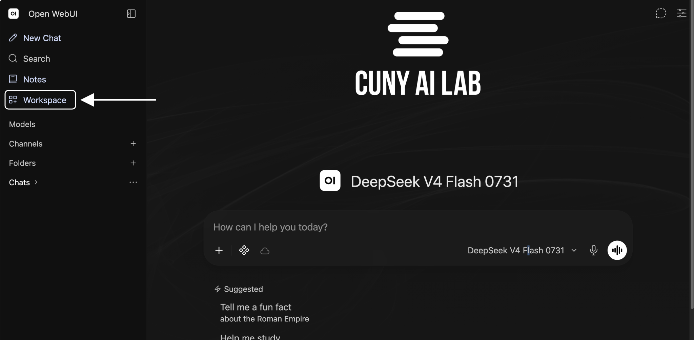
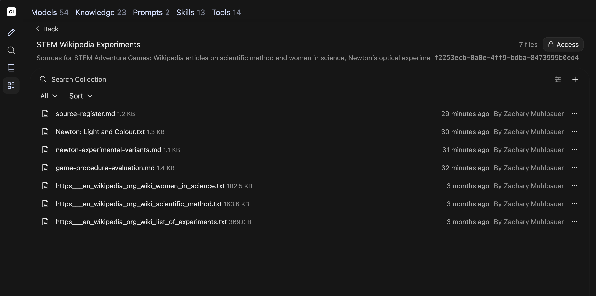
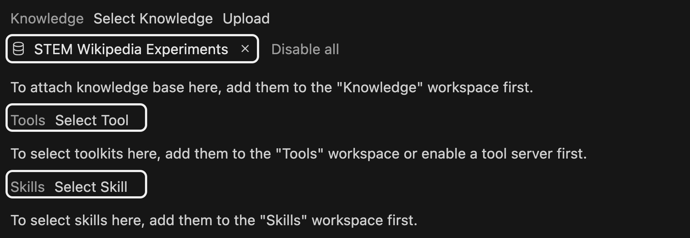
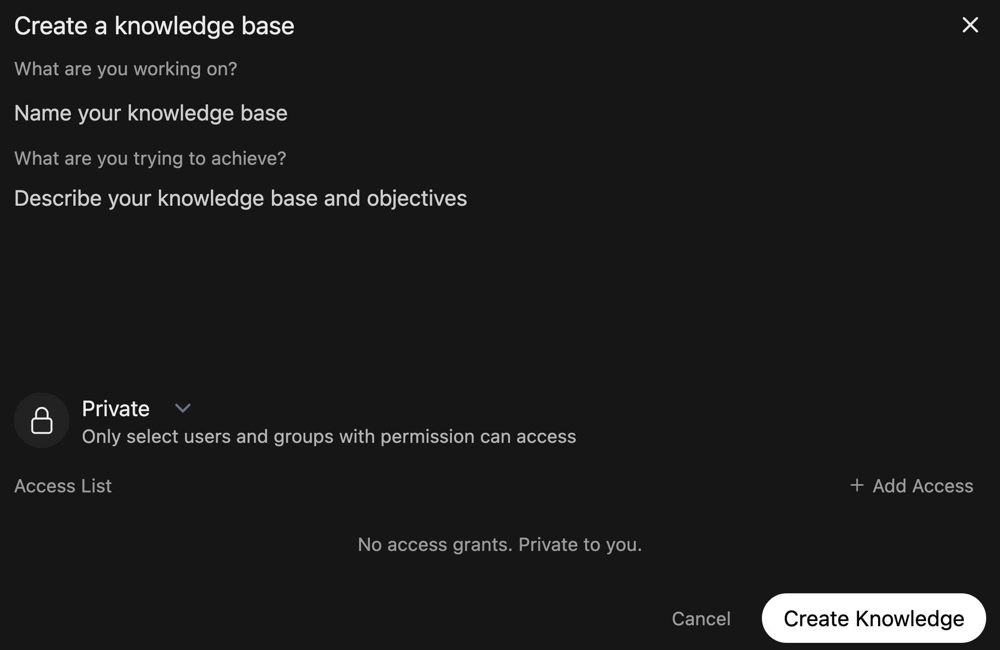

Upload documents for models to reference in teaching and research
CUNY AI Lab Sandbox
Developed by Zach Muhlbauer
Before attending, confirm individual access, Sandbox sign-in, Workspace access, and Knowledge collection access.
A knowledge collection contains uploaded documents that a model can search when responding to questions.
Collections support PDFs, Markdown, and plain text. Attach a collection to a custom model under Knowledge.
Choose a question your documents can answer.
Bring course materials, research papers, or other documents you know well enough to check.

Open your private copy of STEM Adventure Games or Compare Wikipedia Edits.
Review Base Model and System Prompt. Keep instructions from Workshop 1. Leave Skills and Tools unselected.
Start a new chat. Select model ID on bottom right of message box. Choose your custom model.
Ask your document question and save its response before attaching documents. Record any sources it uses.
Which passages did your model use, and do they support its claims?

Use sources for different questions.
Check whether a scene follows its sources or adds invented details.
Open each file and compare its contents with its source page.
List of experiments once imported a Wikimedia rate-limit error. Article text was restored on September 17, 2026. Check contents after every import.

In your STEM copy, start an adventure about light and colour. Choose one action, then ask about its historical sources.
Which objects in this scene appear in Newton: Light and Colour? Quote a relevant passage. Which details were invented for this game?
Open cited material. Does it support your model’s response?
Begin with a few documents you know well enough to check.
Use Markdown, plain text, or readable PDFs. Name files clearly and use headings to separate sections.
Check scanned or complex PDFs before uploading. Convert them to text if needed.
Choose documents that explain your course or research project and describe what you want to examine.
Choose documents for your teaching or research task.
Read documents before uploading; distinguish summaries from original accounts.

Repeat your saved question after attaching documents. Keep base model and system prompt unchanged. Compare responses and check which source passages were used.
| Observation | Next check |
|---|---|
| No relevant source appears | Check whether files finished processing, are attached, and are accessible. Review your search query. |
| A source is present but misread | Read cited passages in full and revise instructions. |
| A response invents a citation | Open cited documents and verify quotations and page numbers. |
Save unsuccessful responses before revising anything.
Share your collection with people who will use your custom model.